Description burlesque
Description burlesque des réjouissances faittes à Besançon pour la paix, le 8 décembre 1714
Click a manuscript image to enlarge it. Cliquez sur une image du manuscrit pour l’agrandir.
Hover over, focus, or tap the dotted passage to display its critical note. M = BMB Ms 1054. Survolez, sélectionnez au clavier ou touchez le passage en pointillé pour afficher sa note critique. M = BMB Ms 1054.
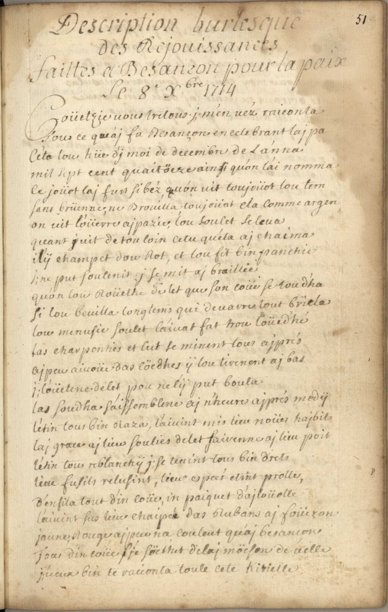
Description burlesque des Rejouissances faittes a Besancon pour la paix le 8e Xbre 1714
Coüetzie uous trelous ji m'en véez raiconta
tous ce qu'ai fa Besançon en celebrant lai pa
C'eta lou hüe d'i moi de decembre de l'anna
mil sept cent quaitöeze ainsi qu'on l'ai nomma
Ce joüot lai fun si béz qu'on uit toujoüot tou tem
sans brüenne ne brouilla toujoüot eta comme argen
on uit l'oüerre aipazie lou soulet se leua
quant quit de tou loin cete qu'eta ai chaima
ilÿ champ et dou Rot et lou fit binpanchie
Ji ne put soutenir ji se mit ai braillie
qu'on lou roüethe di let que son coüe se toud'ha
si lou beuilla longtems qui deuarre tout bricla
lou menusie soulet l'aiuat far trou coüed'hé
las charpenties et cur se minent tous aiprés
aipeu aiuoüe das cördhes ÿ lou tirement ai bas
ji l'oüetene delet pou ne lÿ put bouta
las soudha s'aissemblene ai n'heure aiprés medÿ
l'etin tous bin raza, l'aiuint mis lieu noües haibits
lai grace ai lieu soulies delet fairenne ai lieu poit
l'etin tous reblanchÿ ji se tenint tous bin drets
lèue fusils relusins, lieu espées etint protte,
d'enfila tout din coüe in paiquet d'aicoüotte
laiuint sur lieu chaipée das rubans ai foüezon
jaune, rouge, ai peu na couleur qu'ai besançon
Tous d'in coüe si föethet delai möeson de uelle
ji ueux bin te raiconta toute cete kirielle
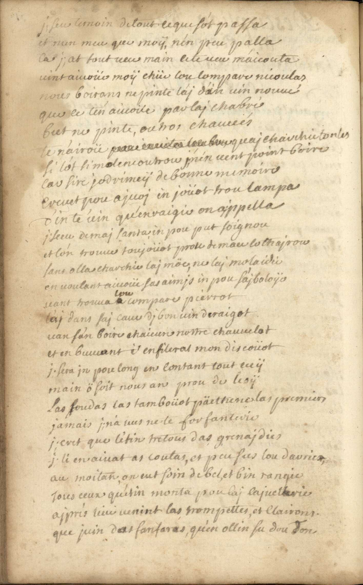
ji scu temoin de tout ce que s'ot passa
et nun meu que moÿ n'en peu palla
car ji at tout ueu main cete ueu m'aicoutas
uint aiuoüe moÿ chüe lou compare Nicoulas
nous boirans ne pinte l'ai d'in uin nouué
que ce t'en aucoile parlai chabré
but ne pinte, ou troi chaucun
te n'airoü aaaaaaaaaaaaa quai charchie tonles
si l'ot si molencoutrou ji n'en uent point boire
car sire jodrimeÿ de bonne memoire
crevet grou aiuoi en joüot trou lampa
d'in te uin qu'enraigie on appella
ji sceu demai lanta in pou put soignou
et l'on trouue toujoüot prole de mau lothairou
sans olla charchie lai möe, ne lai molaidie
en voulant aiuoüe sas aimis in pou s'aiboloÿe
uant trouua lou compare pierrot
l'ai dans sai caue di bon uin de Raigot
uan s'an boire chaicun nostre chauuelot
et en beuuant it enfilerai mon discoüot
ji sera in pou long en contant tout cecÿ
main ö soit nous an prou de lesÿ
Las foudas las tamboüot päethene las premiers
jamais ji n'a uus ne te for fanteuie
ji crut que c'etin tretous das grenaidies
Ji li en aiuat as coutas, et peu sur lou daurier,
au moitan, on eut soin de bel et bin rangie
tous ceux qu'etin monta pou lai caiuellerie
aiprés lieu uenint las trompettes et clairons
que juin das fanfares, qu'en ollin su dou ton
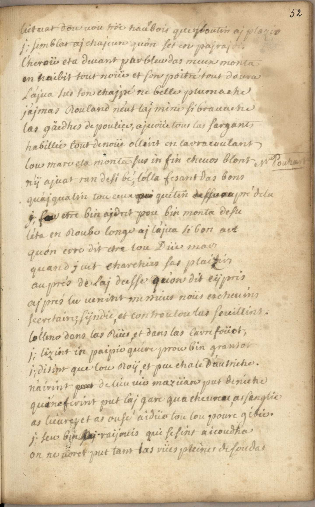
liet uat dou uou tröe haubois quez boutin ai plazir
ji semblat ai chaicun qu'on set en pairai
l'heroü eta deuant par bleu das meur monta
en haibit tout noüe et son poitré tout doura
L'aiua sus son chaipé ne belle plumache
j'aimas Rouland n'eut lai mine si brauache
las gäedhes de pouliee, aiuoüe tous las sargants
habillée tout de noüe ollint en carracoulant
lou mare eta monta sur in fin cheuos blant
n'ÿ aiuat ran de fi bé, l'olla fesant das bons
qu'ai quatin tou ceux qu'etin dessus aupré delu
Ji fou etre bin aidret pou bin monta defu
l'eta en Roube longe ai l'ajua si bon aut
qu'on erre dit etre lou Düe mars
quand i uet charchier sas plaizir
auprés de lai deesse qu'on dit cÿpris
aiprés lu uenint messieur noüs escheuins
secretaire, sÿndic, et controulou las scuillint
l'ollene dans las Rües, et dans las carrefoüot,
Ji lizint in paipie qu'ere prou bin grantot
ji disint que lou Roÿ, et peu Chale d'Autriche
n'airint pxx de lieu uie mazüan put de niche
qui ne ferint pu lai gare qua cheureal, as sanglie,
as lieures et as oufé aidüe tou lou poure gibie.
Ji scu bin raijouis qui se sint aicoudha
on ne uoret put tant las rües pleines de soudas
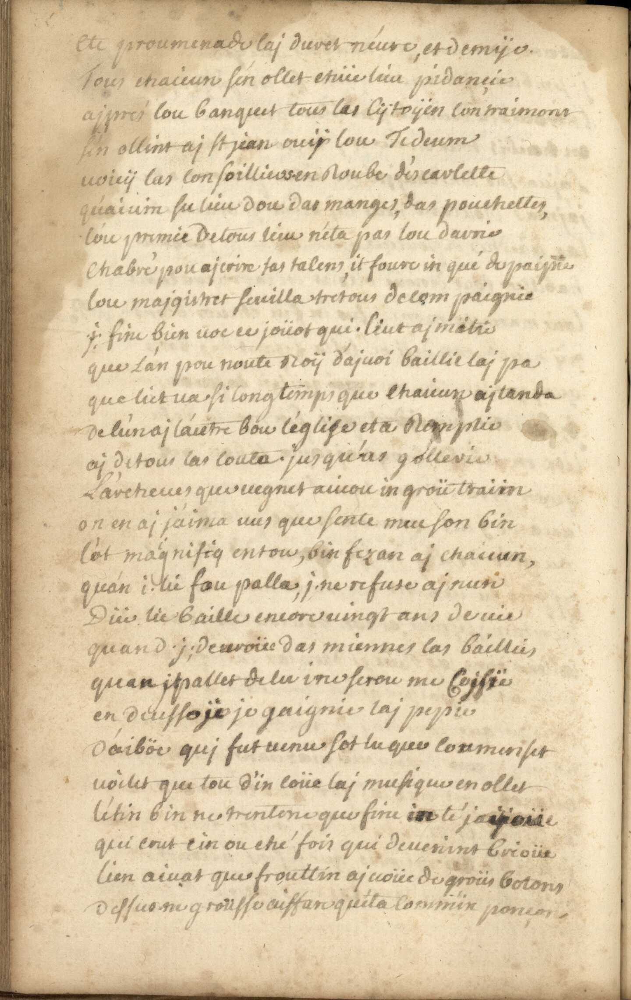
Cte proumenade lai duret n'eure et demÿe.
Tous chaicun s'en ollet chüe lieu pidancie
aiprés lou banquet tous las cÿtoÿen contraimont
s'en ollint ai St jean ouÿ lou Te deum
uoicÿ las lon soillieus en roube d'escarlette
qu'ai uin su lieu dou das manger, das pouchettes,
l'ou premie de tous lieu n'etat pas lou darnie
Chabré pou aicrire sas talens, it foure in qué du paipie
lou maigristet seuilla tre tous de compaignie
ji fini bien uoe ce joüot qui liut ai mitie
que l'an pou noute Roÿ d'aiuoi baillie lai pa
que ciet ua si longtemps que chaicun aitanda
de l'un ai l'autre bou l'eglise eta remplie
ai de tous las couta jusqu'as gollerie
l'archeuesque uegnet aiuou in groü train
on en ai j'aima uus que sente meu son bin
l'ot maignifiq en tout, binfezan ai chaicun,
qu'an i lie fou palla, ji ne refuse ai nun
Düe lie baille encore uingt ans de uie
quand ji deuroüs das miennes las baillies
quand it pallet de lu i ne ferou me coisié
en deusso ji je gaignie lai papie
d'aiböe qui fut uenu sot luque coume riset
uoilet que tout d'in coü lai musique en ollet
l'etin bin ne trentene que fini in te jaÿoüe
qui crut ein ou etié fois qui deuerint crioüe
lien aiuat que frouttin ai uoüe de groüs botons
dessus ne grousse aiffan qu'eta commin ponçon
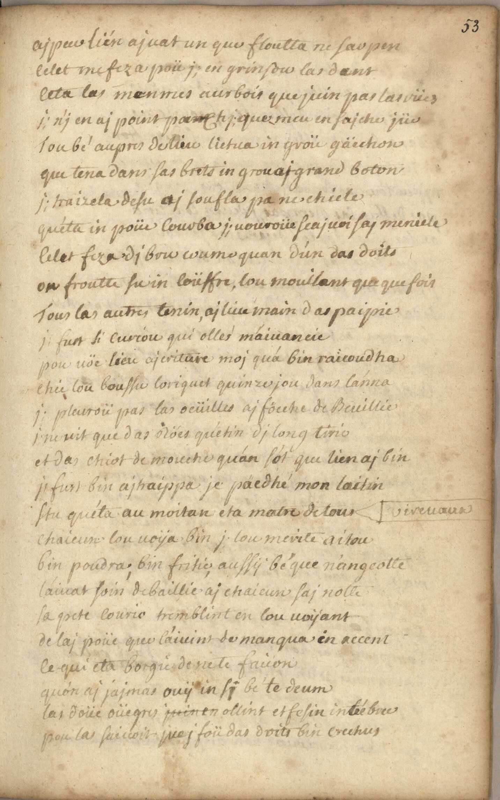
aipue li'en aiuat un que floutta ne sarpen
celet me feza poü ji en grin sous las dant
ceta las menmes aurbois que juin pas las rües
ji n'i en ai point panchi que meu en faiche jüe
Tou bé aupres de teire liet ua in groü gäechon
que tena dans sas brets in grou ai grand boton
ji traizela desu ai soufla pa ne chiele
qu'eta in poüe courba ji uouroüe scai uoi sai meniele
celet feza di bou coume quan d'un das doits
on froutte su in coüffre lou mouilant que que fois
tous las autres tenin, ai liue main das paipie
ji fust si curiou qui olles m'aiuancie
pou uöe lieu aicriture moi qu'a bin raicoudha
chie lou boussu loriquet quinze jou dans l'anna
ji pleuroü par las oeüilles ai föeche de beuillie
ji ne uit que das röes qu'etin di long tirie
et das chiot de mouche qu'an l'ot que lien ai bin
ji fust bin aihaippa je päedhé mon laitin
stu qu'eta au moitan eta matre de tous uireuaua
chaicun lou uoÿa bin i lou merite aitou
bin poudra, bin frisies, aussÿ bé que n'angeotte
l'aiuat soin de baillie ai chaicun sai notte
sa pete courie tremblint en lou uoÿant
de lai poüe que l'aiuint de manqua in accent
ce qui eta borgie de ne te faicon
qu'on ai jaimas ouÿ in si bé te deum
las doüe oüegres prin en ollint et fe sire intié bru
pou las saiuoir jüe i foü das doits bin crechus
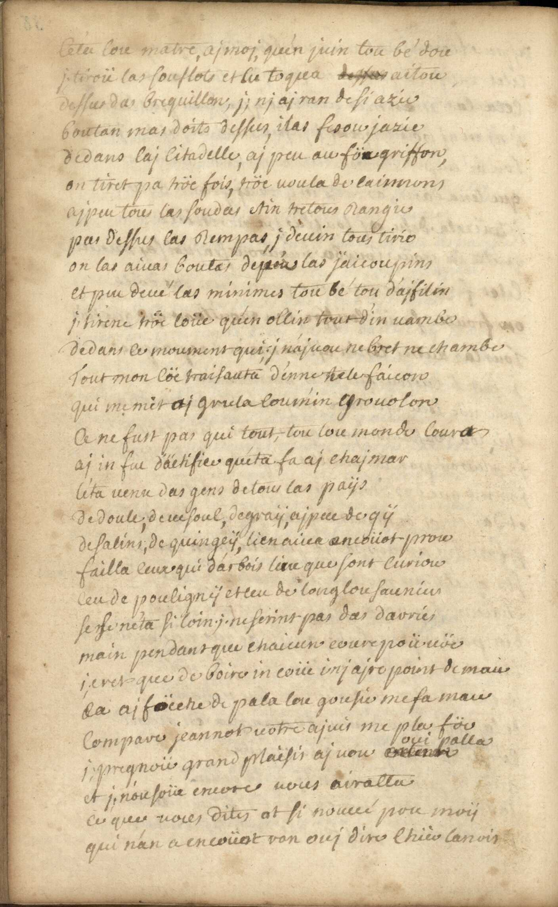
c'eta lou matre, ai moi, qu'en juin tou bé dou
ji tiroü las souflots et lu toqua dessus aitou
dessus das brequillon, jiu ni ai ran de si azie
coutn mas droits dessus, ilas fesou jazie
dedans lai citadelle, ai peu au föe griffon,
on tiret pas tröe fois, tröe uoula de cainmons
aipue tous las soudas etin tretous rangie
par dessus las rempas, i deuin tous tirie
on las aiuas boutas de peu las jaicoupins
et pui deue las minimes tou bé tou d'aifilin
ji tirene tröe coüe qu'en ollin tout d'in uambe
dedans le moument qui ii n'ai uou ne bret ne chambe
Tout mon cöe traisaute d'enne tele faicon
qui me mit ai grela coumin grouolon
Ce ne fust pas qui tout tou lou monde courat
ai in fue däetifier qu'eta fa ai chaimar
c'eta uenre das gens de tous las paÿs
de doule, de uesoul, de graÿ, aipue de gÿ
de salins, de quingeÿ, lien crier ancoüot prou
failla ceux qui d'arbois lure que sont curiou
ceu de poulignÿ et ceu de long lou sauniers
sesi n'eta si loin i ne serint pas das dauries
main pendant que chaicun coure poü uöe
ji cret que de voire in coüe ini aire point de mau
la ai föeche de pala lou gousie me fa mau
compare jeannot uotre aiuis me pleu föe
ji pregnoü grand plaisir ai uou entenre oui palla
et ji n'ousoüe encore uous airatta
ce que uous dites at si nouué pou moÿ
qui n'an a encoüor ran oui dire chiés lanois
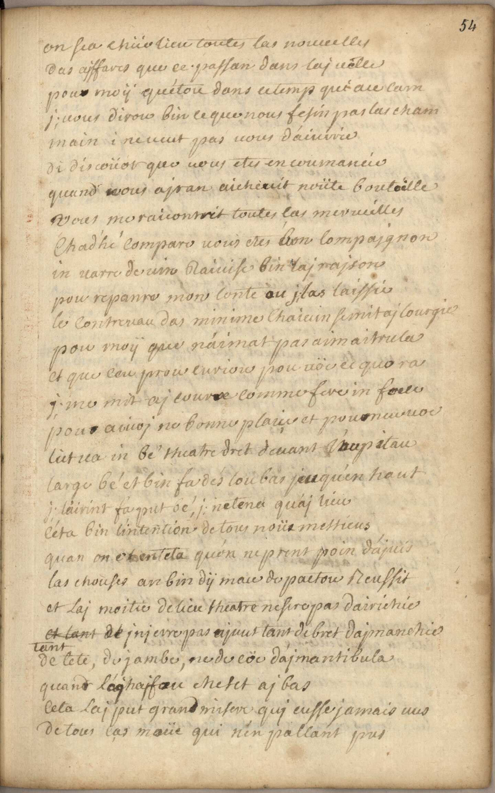
on sca chüe lieu toutes las nouueilles
das aiffares que ce passan dans lai uelle
pou moÿ qu'etou dans ce temps qui au carn
ji uous dirou bin ce que nous fesin par las cham
main i ne ueut pas que uous d'aiuirie
di discoüot que uous etes en coumancie
quand uous airan aicheuit noüte boutoille
uous me raicontret toutes las merueilles
Chad'hé compare uous etes bon compaignon
in uarre de uin raiuise bin lai raison
pou repanre mon conte au jilas laissie
le conteriau das minime chaicun se mit ai lourgie
pou moÿ que n'aimat pas aim aitre la
et que ceu prou curiou pou uöe et quo ra
ji me mit ai course comme fere in foue
pou aiuoi ne bonne plaice et pou meu uoi
liet ua in bé theatre dret deuant chapiteau
large bé et bin fa des loubas jeuqu'en haut
ji l'airint fa put bé, ji netena qu'ai lieu
c'eta bin l'intention de tous noüe messieurs
quand on chanteta ot enteta qu'on ne prent poin d'apries
las chouses an bin dÿ mau de paetou reussir
at lai moitie de lieu theatre ne sire par dairichie
et tant tant de ini erre pas aipres tant de bret daimanchie
de tete, du jambe, ne de cöe daimantibula
quand l'aqhai fare me set ai bas
ceta lai put grand misere qui eusse jamais uus
de tous cas moüe qui n'en pallant pus
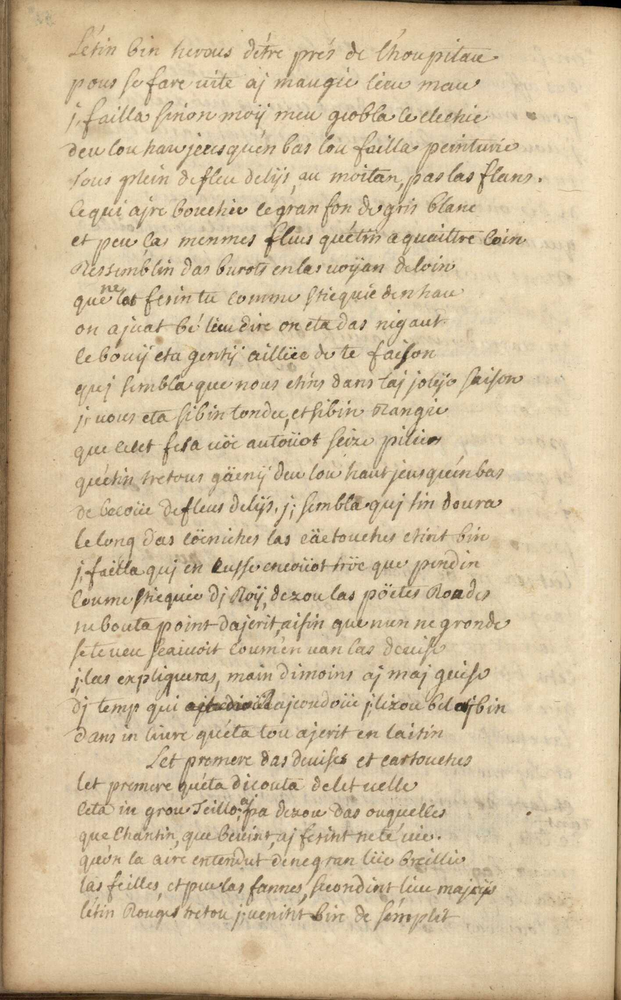
L'etin bin herous d'etre prés de l'houpitau
pour se fare uite ai maugie lieu mau
ji failla sinon moÿ meu geobla le clechie
deu lou hau jeusqu'en bas lou failla peinturie
tous plein de fleu de lÿs au moitan, pas las flans.
Ce qui aire bouchie le gran fon du gris blanc
et peu las memmes fleur qu'etin a quaittre loin
ressomblin das burots en las uoÿan de loin
que ne lar fesin tu comme chequie den hau
on aiuat bé lieu dire on eta das nigaut
le bouÿ eta gentÿ aillüe de te faison
qui sembla que nous chins dans lai jolÿe saison
ji uous eta si bin tendu, et si bin rangie
que celet fesa uöe autoüot seize piliers
qu'etin tertous gäenÿ deu lou haut jeus qu'en bas
de becoüe de fleus de lÿs, ji sembla qui tin doura
le long das cöeniches las cäetouches etint bin
ji failla qui en eusse creoüot tröe que pendin
coume stiequie di Roÿ dezou las pöetes rondes
tu bouta point dai crit, aifin que nun ne gronde
se te ueu scaiuoit coum'en uan las scuise
jilas expliqueas, main dimoins ai mai guise
di temp qui aitceioüe aicoudoüe ji lizou bel ai bin
dans un liure qu'eta tout ajerit en laitin
Let premere das deuises et cartouches
Let premere qu'eta dicouta de let uelle
Ceta in grou teilloi aipu dezou das ouquelles
que chantin, que beuint, ai ferint ne te uie.
su'on la aire entendut de ne gran lüe breillie
las feilles, et pue las fannes, secondint lieu majÿs
l'etin rouge tretou ji uenint bin de s'emplir
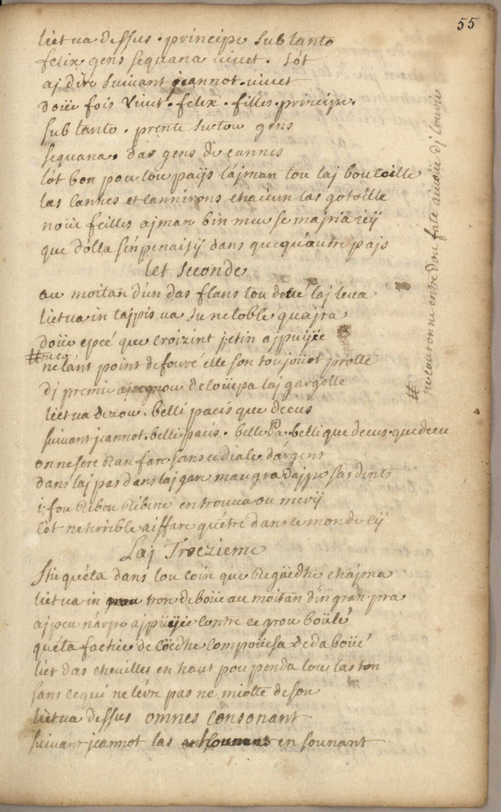
Liet ua dessus · principe sub tanto
felix gens sequana uiuet · s'ot
ai dire suiuant jeannot · uiuet
doüe fois Viuet · felix · filles · principe ·
sub tanto · prente surtou gens
sequana · das gens de cannes
c'ot bon pou lou paÿs l'aiman tou lai boutaille
las cannes et cannirons chaicin las gotoille
noüe feilles aiman bin meu se mairia reÿ
que d'olla s'empenaijÿ dans quequ'autre pais.
Let seconde
au moitan d'un das flans tou detre lai leua
liet ua in taipis ua dune toble quaira
doüe epée que croizint ji etin aipuyëepost 241 add. marg. M ut vid. : Ne couronne entre dou fate aiuoiée di courie
n'e lant point de fouré elle son toujoüot protte
di premie ai cgnou deloüepa lai gargotte
liet ua dezou · belli pacis que decus
suivant jeannot · belli pacis · belle Pa · belli que decus · queduu
on ne fere ran fare sans ce diale d'argent
dans lai pas dans lai gare maugra daipe sas dents
ji fou rebou rebine en trouua ou meuÿ
c'ot ne terrible aiffare qu'etre dans ce monde cÿ
Lai Troezieme
Stie qu'eta dans lou coin que redäedhe chaina
liet ua in tron de boüe au moitan d'in gran pra
ai peu n'aipe aipüÿée contre ce grou boülé
qu'eta fachie de cöedhe compoür fa de la boüe
liet das cheuilles en haut pou penda tous las ton
sans ce qui ne leure pas ne miette de son
liet ua dessus omnes consonant
suiuant jeannot las en sounant
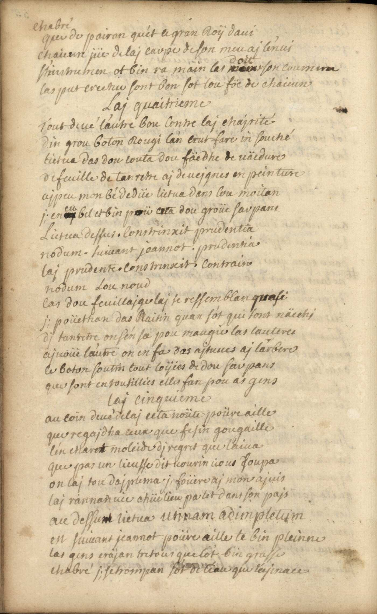
chabré
que de pairon qu'et ci gran Roÿ daui
chaicun pü de lai caupe de son meu ai l'enui
st'aiutremen ot bin ra main las doit son coumen
las put crechu sont bon sot tou föe de chaicun
Lai quaitrieme
Tout deué l'autre bore contre lai chairité
din grou boton rougi l'an crut fare in fouché
liet ua das dou couta dou fäedhe de uäedure
de feuille de tanrche ai de ueignes en peinture
aipeu mon bé de düe liet ua dans lou moitan
ji en eu bel et bin poü ceta dou groüe sarpant
Liet ua dessus · constrinxit prudentia
nodum · suiuant jeannot · prudentia ·
lai prudente · constrinxit · contrain
nodum lou noud
las dou feuillaige lai se ressemblan quasé
ji poüethan das raisin quan s'ot qui sont räechi
di tanretre on s'n sa pou maigue las cauteres
ai uoües l'autre on en fa das aiheues ai larbere
le boton soutint tout loÿées de de dou saupans
que sont en toutillies elles fan pou as gens
Lai cinquieme
au coin deué delai ceta noüte poüre aille
que regaidha ceux que fe sin gougaille
l'en charest moleide di regret que l'aiua
que pas un lieusse dit uourin uous soupa
on lai tou daiplema ji foüere ai mon aiuis
lai ran nan uie chüe lieu paslet dans son pais
au dessus liet ua utinam adimpletum
en suiuant jeannot poüre aille te bin pleinne
las gens cräian tretous que l'ot bin grasse
chabré ji se trompan s'ot de ciau qui l'aimace
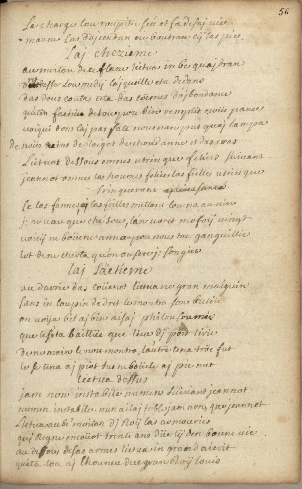
Le charge lou roupitre s'en ot fa desai uie
mazeu las daicendan ne boutran cÿ las pies
Lai chezieme
au moitan de ce flanc liet ua in be quai dran
dret dessu loue medÿ l'ai quaille eta dedans
das dous coutas ceta das cöesne d'aibondance
qu'etin fachiés de tous pou bin remplir noüe pances
uoiqui dons lai pas fate nous nan prit quai lampa
de noüs rains de Raigot de Choudanne et das Cras
Liet uat dessous omnes utrin que felices suivant
jeannot omnes las houmes, felices las feilles utrin que
trinquerant a lieur santé
Le las fanne, ai las feilles mettant lou na au uin
ji ne uau que ché sous, l'an uoret mofoÿ uingt
uoicÿ ne boüene anna pou nous tou ganguillie
lot de ne cheuta qu'en ou sero ji songies.
Lai säetieme
au daurie das cüenot liet ua ne gran maigrein
sans in loupin de dret le montra son butin
on uoÿa bel ai bin aisai philou soumie
que ce s'eta baittüe que liue di poit tirie
du ne man le nou montra, l'autre tena tröe fur
le se tena ai piot sur ne boücle ai pie nur
liet ua dessus
iam non instabile numen suiuant jeannot
numen instabile · nun ailai toble iam non, que jeannot
liet ua aubé moitan di Roÿ las aumouries
qui regne encoüot trente ans düe lÿ den boune uie
au dessous de sas armes liet ua in grand aicrit
qu'eta tou ai lhouneu due gran Roÿ louis
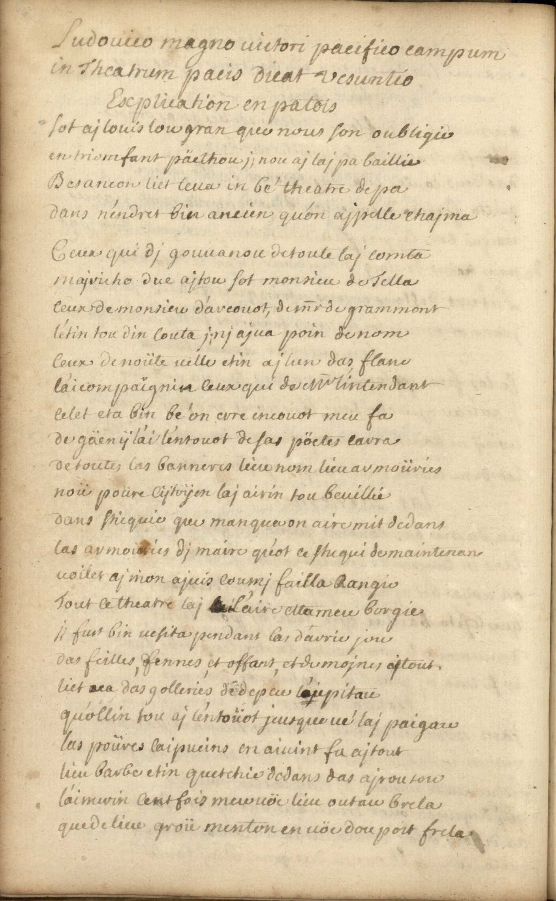
Ludouico magno uictori pacifico campum
in theatrum pacis dicat Uesuntio
Explication en patois
Sot ai louis lou gran que nous son oubligie
en trimgant päethou i nou ai lai pas baillie
Besancon liet teua in bé theatre de pa
dans n'endret bin ancien qu'on aipelle chaima
Ceux qui di gouuanou de toute lai comta
maiuuiecho due aitou sot monsieu de Tella
ceux de monsieu d'aucouot, de monsieur de grammont
l'etin tou din couta ji ni aiua poin de nom
Ceux de noüte uille etin ai lun das flanc
l'aicompaïgnia ceux qui de Monsieur l'intendant
celet eta bin bé on eure encouot meu fa
de gäenÿ l'ai l'entouot de sas pöetes caura
de toutes las banneres liue nom lieu au moüries
noü poüre cÿtoÿen lai airin tou beuillie
dans stie quie que manque on aire mit dedans
las aumoiries di maire qu'ot ce stu qui de maintenant
uoilet ai mon aiuis coumi failla rangie
tout ce theatre lai l'aire etta meu borgie
ji fust bin uesita pendant las d'aurie jou
das feilles, fenmes et offant, et du moines aitout
lit ua das golleries, de de peu l'oupitau
qu'ollin tou ai l'entoüot jeusque ue lai paigau
las poüvres caipucins en aiuint fa aitout
lieu barbe etin quetchie dedans das airoutou
l'aimuuin cent fois meu uöe lieu outau brela
que de lieu groü menton en uöe dou poit frela
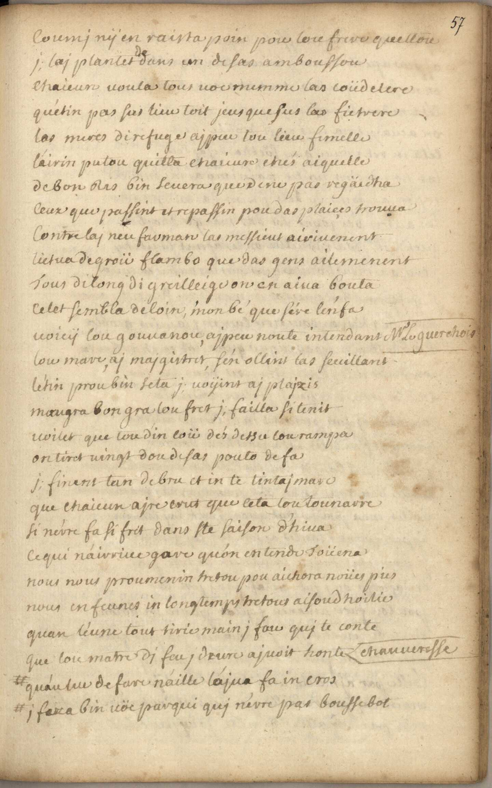
coumi nÿ en raista poin pou lou frere quellou
ji lai plantet dedans un de fas amboussou
chaicun uoula tous uoe memme las coüdelere
qu'etin pas sus lieu toit jeusque sus las fichere
las mures di refuge aipeu tou lieu femelle
l'aiuin putou quitta chaicun chés aiguelle
de bon ris bin seuera que de ne pas regäedha
ceux qui passint et repassin pou das plaices trouua
contre lai neu fauman las messieur airiuenent
liet ua de groü flambo que das gens ailemenent
Tous di long di greilleige on en aiua bouta
celet sembla de loin, mon bé que s'ere l'en fa
uoicÿ lou gouuanou, aipeu noute intendant Monsieur Leguerchois
lou mare, ai maigristret s'n ollint las seuillans
l'etin prou bin feta ji uoÿint ai plaizir
maugra bon gra lou fret ji failla si tenir
uoilet que tou d'in coü dés dessu lou rampa
on tiret vingt dou de sas pouts de fa
ii firent tan de bru et in te tintaimare
que chaicun aire crut que ceta lou tounarre
Su b'eyre fa si fret dans ste saison d'hiua
ce qui n'airriue gare qu'on entende toüena
nous nous proumenin tretou pou aichora noüs pies
nous en scunes in longtemps tretous aisoudhoilie
quand l'eune tous tirie main i fare qui te conte
que lou matre di feu, deure aiuoir honte chauueresse
qu'au lue de fare n'aille l'aiua fa in cros
i fara bin uöe parqui qui neure pas boussebot
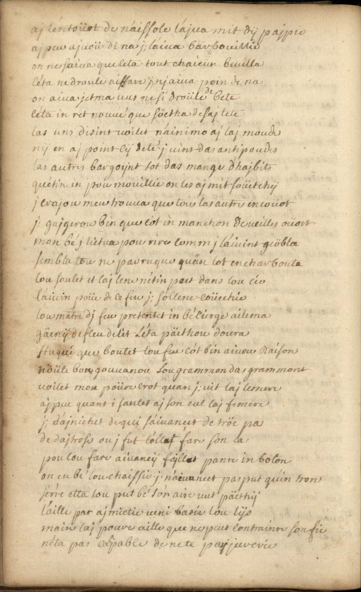
ai l'entoüot de n'aissole l'apua mit dÿ paipie
ai pue aiuoü di nas ji l'aiua barbouillie
on ne saiua que ceta tout chaicun beuilla
c'eta ne droule aiffare ji ni aiua point de ne
on aiua jetma uis ne si droüle de bete
c'eta in ret nouué que söethas de sai tete
las uns disint uoilet n'ainimo ai lai moude
nÿ en ai point cÿ de té ji uint das antipoudes
las autres bargoÿnt sot das mange d'haibits
qu'etin in pou mouillie on les ai mit foüetchÿ
i craiou meu trouua que tous las autres encoüot
ji gaigerou bin que c'ot in manchon de ueilles oüoit
mon bé ji liet ua pou rire comm i l'aiuint geöbla
sembla tou ne pauruque qu'in lot encharbouta
lou soulet et lai cene n'etin peu dans lou cie
l'aiuin poüe de ce fere ji s'ollene coüechie
Lou matre di feu pretentet in bé cierge ailema
gäeny de fleu de lit l'eta päethou doura
Stuqui que boutet lou feu c'ot bin aiuou raison
nöüte bon gouuanou lou grammon das grammont
uoilet mou poüvre crot quan si uit lai lemere
aipeu quant i santet ai son cul lai femere
ji d'ainichet de qui s'aiuancet de tröe pa
de daitrose ou i fut l'ollat fare son ca
pou lou fare aiuancÿ faillut panre in boton
on eu bé lou chaissie ji n'aiua niet pas put qu'un tron
Serre etta lou pmut bé s'on aire ut päethy
L'aille par aimietie ueni basie lou lÿs
main lai poure aille que ne peut contrainre son fie
n'eta pas capable de ne te paypuuerie
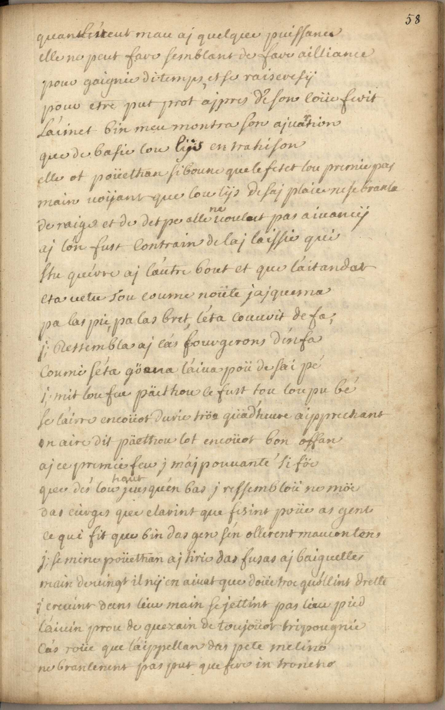
quant le ueut mau ai quelque puissance
elle ne peut fare semblant de fare ailliance
pour gaignie di temps et ses raiseue sÿ
pour etre put prot aipres de son coüe ferit
L'aimet bin meu montra son aiuartion
qye de vasue kiy lÿs en trahison
elle ot poüethan si boune que le fetet lou premie pas
main uoÿant que lou lÿs de sai plaice ne sebranla
de raige et de detpe alle ne uoulait pas aiuancÿ
ai l'on fust contrain de lai laissie qué
Stu qu'erre ai l'autre bout et que l'aitandar
eta uetue tou coume noüte jaiquema
pa las pie, pas la bret, l'eta couurit de fa,
ji ressembla ai cas fourgerons d'en fa
coume s'eta göeua l'aiua poü de sai pé
ii mit lou feu päethou ce fust tou lou pu bé
se l'airre encoüot durie tröe qüad'heure aipprechant
on aire dit pärthou lot encoüot bon offan
ai ce premie feu i m'aipouuanté si föe
que des lou haut jusqu'en bas i ressembloü ne möe
das cierges que clarint que fesint poue as gents
ce qui fit que bin das gens s'en ollerent maucontens
Ji se mine poüethan ai tirie das fusas ai baiguettes
main de uingt il nÿ en aiuat que doüe troe qu'ollins drette
je reuint dans liue main se jettint pas liue pied
l'aiuin prou de quezain de toujoüot trupougnié
Cas roüe que l'aippellan das pete meline
ne branlement pas put que fere in troncho
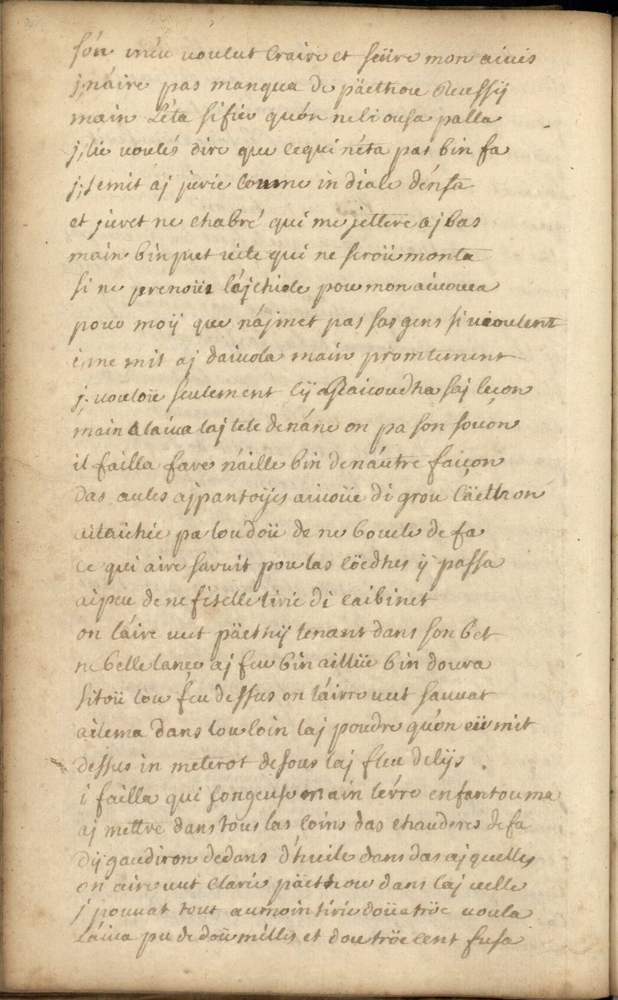
S'on meu uoulut craire et scüre mon aiuis
ji n'aire pas manqua de päethou reussÿ
main l'eta si fier qu'on ne li ousa palla
ji lie uoulés dire que ce qui n'éta pas bin fa
ji (j)emit ai jurie coume in diale d'enfa
et juret ne chabré qui me jettere ai bas
main bin pier uite qui ne seroü monta
si ne prenoüs l'ai chiole pou mon aiuouca
pour moÿ que n'aimet pas sas gens si uioulent
i me mit ai daiuola main promtement
ji uouloü seulement lÿ aicaicoudha sai leçon
main a la uia lai tete de n'ane on pas son fouons
il failla fare n'aille bin de n'autre faiçon
das aules aipantoÿes aiuoüe di grou cäethon
aitaichie pa lou doü de ne boucle de fa
ce qui aire saruit pou las cöedhes ÿ passa
aipeu de ne fiselle tirie di caibinet
on l'aire uut päethÿ tenant dans son ver
ne belle lanee ai feu bin aillüe bin doura
sitoü lou feu dessus on l'airre uut sauuat
ailema dans lou loin lai poudre qu'on eü mit
dessus in meterot de fous lai fleu de lÿs
i failla qui songeuse main leure enfanttouma
ai mettre dans tous las coins das chauderes de fa
dÿ gaudiron dedans d'huile dans das aiquelles
on aire ut clarie päethou dans lai uelle
I pouuat tout au moin tirie doü a tröe uoula
l'aiua pu de doü milles et dou tröe cent fusa
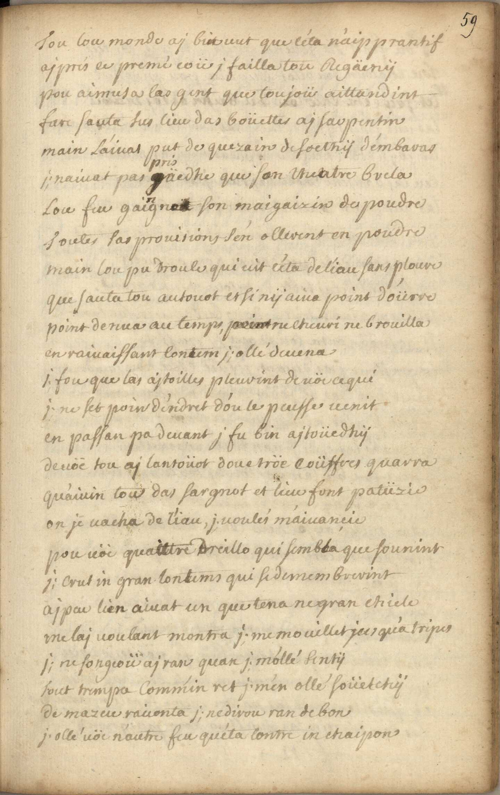
tou lou monde ai bin uut que c'eta n'aipprantif
aiprés eu premé coü i failla tou regäenÿ
oiy aimusa las gent que toujoüs aittandint
fare sauta sus lieu das boüettes ai sarpentin
main l'aiuas put de quezain de foetchis d'embaras
ji n'aiuat pas pris gäedhe que son theatre brela
lou feu gainggnoit son maigaisin de poudre
toutes las prouisions s'en ollerent en poudre
main lou pu droule qui eut c'eta de l'iau sans ploure
que sauta tou autouot et si nÿ aiua point doürre
point de nua au temps, point ne cheuri ne brouilla
en raiuaissant contem ji ollé deuena
ji fou que las aitoilles pleurint de vöe ce qué
ji ne set poins d'endret d'ou ce peusses uenir
en passan pa deuant i fu bin aitoüedhÿ
de uöe tou ai lantoüot doue tröe coüfferes quarra
qu'aiuin tous das sargnot et lieu font patüzie
on je uacha de l'iau, ji uoulés m'aiuancie
pou uöe quaittre dreille qui sembla que sourint
ji crut in gran lontemps qui se demembrerint
aipeu lien aiuat un que tena ne gran chiele
me lai uoulant montra ji me mouillet jusqu'a tripes
ji ne songeoü ai ran quan ji m'ollé sentÿ
tout trempa comm'in ret ji m'en ollé foüetchÿ
de mazeu rauonta ji ne dirou ran de bon
ji ollé uöe n'autre feu qu'eta contre in chaipon
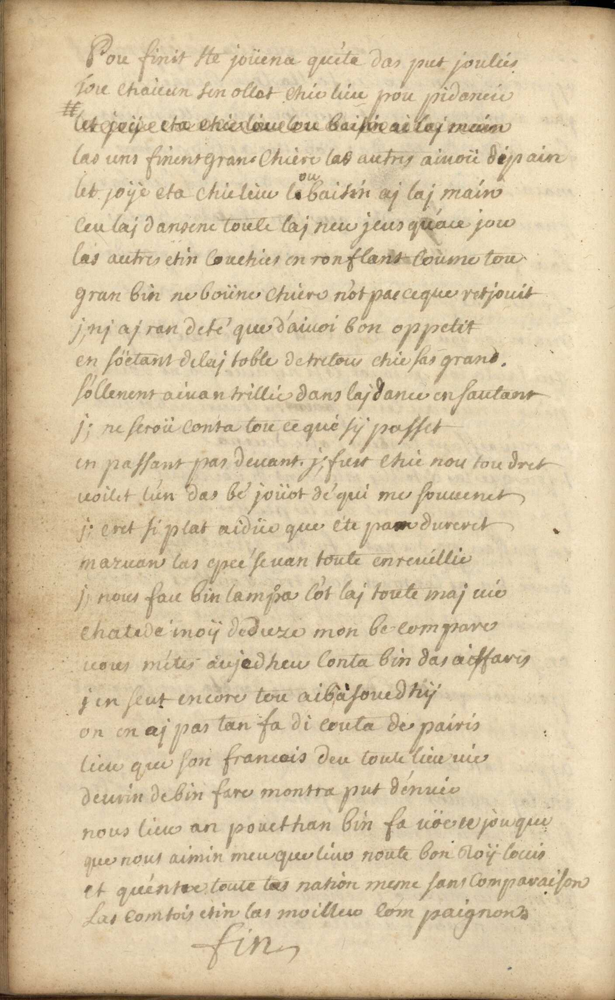
Pour finir ste joüena qu'eta das put joulies
Tou chaicun sen ollat chie lieu pou pidancie
Let icÿ eta chies l’[…] lou baisin ai lai main
las un firent grans chiere las autres aiuoü di pain
let joÿe eta chie lieu lou baisin ai lai main
ceux lai dansere toute lai nue jeus qu'au jou
las autres etin couchies en ronflans coume tou
gran bin ne boüne chiere n'ot pae ce que retjouit
ji ni ai ran deté que d'aiuoi bon oppetit
en söetant de lai toble de tretous chie sas grand
s'ollenent aiuan trillie dans lai dance en sautant
ji ne feroü conta tou ce qué sÿ passet
en passant par deuant ji fust chie nou tou dret
uoilet l'un das bé joüot dé qui me souuenet
si cret si plat aidüe que ete parre dureret
mazuan las epée se uan toute en reuillie
ji nous faie bin lampa c'ot lai toute mai vue
chatide moÿ de duze mon be compare
uous m'etes aujedheu conta bin das aiffares
i en scut encore tou aibäsouedhÿ
on en ai pas tan fa di couta de pairis
lieu que son francois deu toute lieu uie
deurin de bin fare montra put d'enuie
nous lieu an pourtchan bin fa uöe ce jou qui
que nous aimin meu que lieu noute bon Roÿ louis
et qu'entre toute las nation meme sans comparaison
Las comtois etin las moillere compaignons
Fin